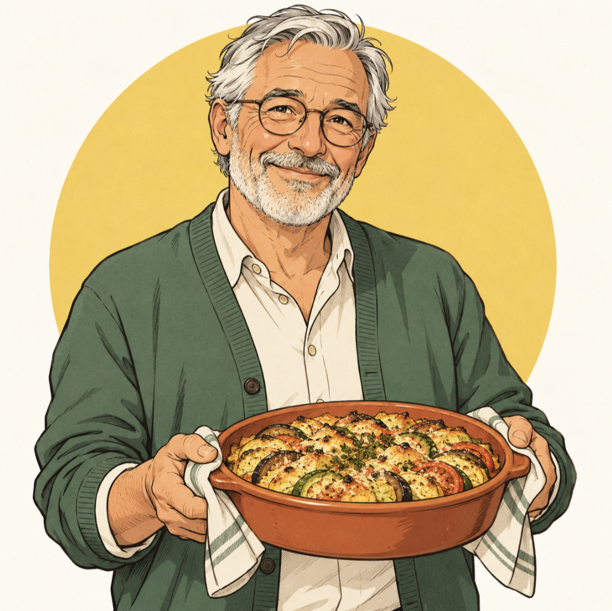

Bernard, le passeur de recettes
Ancien enseignant, il vit seul à Lyon. Les échanges du quotidien lui manquent et il souhaite rencontrer des voisins de toutes générations.
Hôte et invité
Objectif
Partager régulièrement des repas et créer de nouvelles habitudes conviviales.
Motivation
Transmettre ses recettes et retrouver le plaisir de cuisiner à plusieurs.
Frein
Accueillir des inconnus et devoir gérer une organisation compliquée.
Attente
Profils rassurants, petits groupes, contributions claires et repas accessibles à pied.
« Mes recettes sont faites pour être partagées, pas pour rester dans un carnet. »